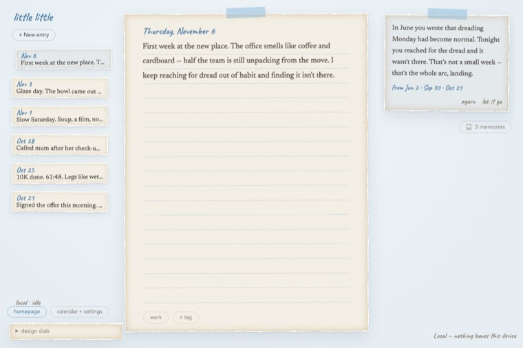
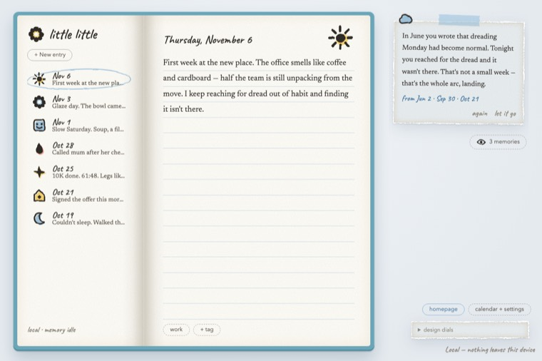
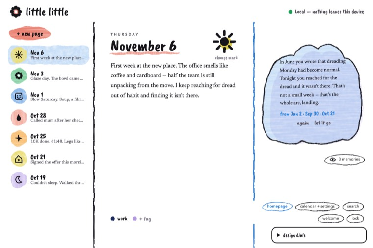
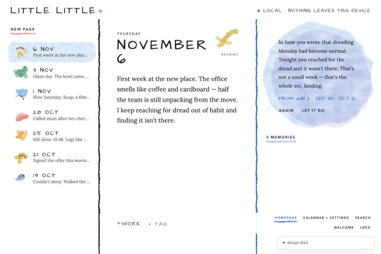

Little Little
Write a little every day, and see how far you've come.
November 6
First week at the new place. The office smells like coffee and cardboard — half the team is still unpacking from the move. I keep reaching for dread out of habit and finding it isn't there.
AI guess. Pick a mark to set your own. Go on, click one.
Your pick. Your Mac. Fast.
Little Little doesn't choose a model for you. Install any Ollama model and pick it in the app. These three are the ones I timed.
57 journal entries of about 300 characters each, using the app's own mood prompt, one at a time on an Apple M5 Pro with 48 GB. Older Macs will be slower, and smaller models trade some nuance for speed. Run it yourself with scripts/bench-mood.py.
Yours alone
Locked
Your pages live in one encrypted file, opened only by your passphrase. No account. No server.
On your Mac
Reading, searching and reflecting all happen here, with a model you choose.
Cloud, if you ask
Want Claude's help? Turn it on yourself. Mark a page private and it never goes.
A lost passphrase can't be recovered, so keep it safe and back up now and then.
In June you wrote that dreading Monday had become normal. Tonight you reached for the dread and it wasn't there.
From Jun 2 · Sep 30 · Oct 21
It remembers, so you don't have to
Write, then rest a moment. Little Little reads your page beside everything you've written before, and offers a few quiet words, with the dates it drew from.
Nothing appears while you're mid-thought. When you've had enough, let it go and it fades like a wash. Bring it back whenever you like.
Related pages wait under memories, from earlier and later.
See how far you've come
A mark for every mood
Each page gets a mood, guessed gently and yours to change. Or paint a mark of your own.
November
Ask your journal
Ask in plain words. You get the pages that fit, and one line that says where the answer came from.
Pages you've marked private stay out of it.
Paint a mark of your own
This is the real feature. Draw anything, in any colour. In the app, your mark takes the place of the default one on the list and in the calendar.
Where it appears
Stored as plain numbers, so it stays small, safe and restorable.
Take it with you
Export every page as Markdown, or save one backup and restore it anywhere.
- Markdown. One file per page, with date, tags and mood.
- One backup. Your painted marks come too.
- A gentle start. Choose a passphrase, pick your models, begin.
Always clear what's happening
Small chips show when a model is ready, loading or catching up. Nothing works in secret.
Quiet on the outside. Careful underneath.
The interface is hand-painted and gentle. Behind it, every promise is enforced in code, and every choice was written down.
How it works
You write. Autosave catches every pause.
One SQLCipher file holds everything, passphrase only.
A local model turns the page into a vector, under a second.
sqlite-vec finds the nearest pages, inside the same file.
A few quiet words, citing the dates they came from.
Decisions, written down
Encrypt first
No official Tauri plugin for SQLCipher, and the community ones were young. The database layer was custom anyway, so I used rusqlite directly.
ADR 0002Vectors in the same lock
Loading an extension into a custom SQLCipher build is fragile. I compiled sqlite-vec in statically, so one file holds text and meaning.
ADR 0003Cloud, behind a cage
Providers are Rust traits. The Claude CLI runs as a sandboxed subprocess, and the private-page filter is enforced on the server side.
ADR 0004Two goals in tension
Mood could always run locally, or follow your chosen provider. I kept it consistent, then added a hard rule: private pages never reach the cloud.
ADR 0006Drawings as numbers
Painted marks are stored as plain numbers: cheap to validate, no executable syntax, and they survive backup and restore untouched.
All recordsRead the rest →
Options considered, the choice, and what it costs.
How each feature gets made
- SpecAcceptance criteria first.
- DesignDiagrams and decisions.
- PlanTests derived from the criteria.
- BuildOne task at a time, test first.
- VerifyRun the real app, then close it.
Seven specs closed. Each one lives in the repo. Read them.
Left out on purpose
- Default models. You choose, so nothing runs that you didn't pick.
- Reminders and alerts. Specced and designed, then pulled back out.
- Dark mode and textures. One look, done properly.
- Web fonts from a CDN. The app works fully offline.
Finding the look
Four directions drawn, judged and set aside before the painted one.




The one that stayed is the window at the top of this page.
Begin your first page
Version 0.1.0 · macOS
Windows and Linux aren't ready yet.
Before you open it
- First time: the app isn't signed yet. Right-click it, choose Open, and confirm once.
- For private AI: install Ollama. The app helps you download the models.
- Optional: Claude Code, for cloud reflections.
- Passphrase: choose one you'll remember.
Questions
Does anything leave my Mac?
Not unless you turn on cloud. Even then, pages marked private never go.
What if I forget my passphrase?
The journal can't be opened again. That's what keeps it private. Back up now and then.
Which AI models does it use?
The ones you pick. Onboarding shows what Ollama already has, or helps you download one.
Can I take my writing out?
Yes. Export to Markdown, or save a single backup and restore it later.
Can I write in my own language?
Yes, including Chinese. How well moods and reflections work depends on the model you choose.